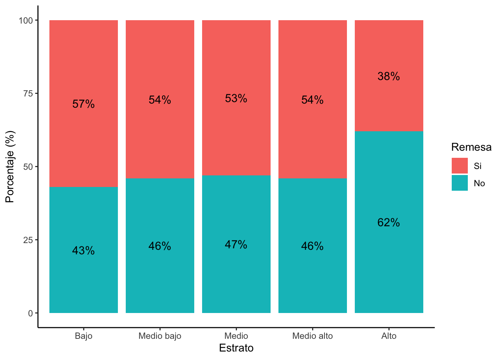
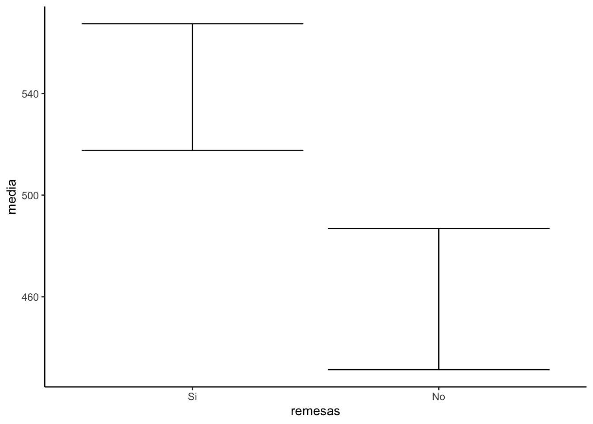
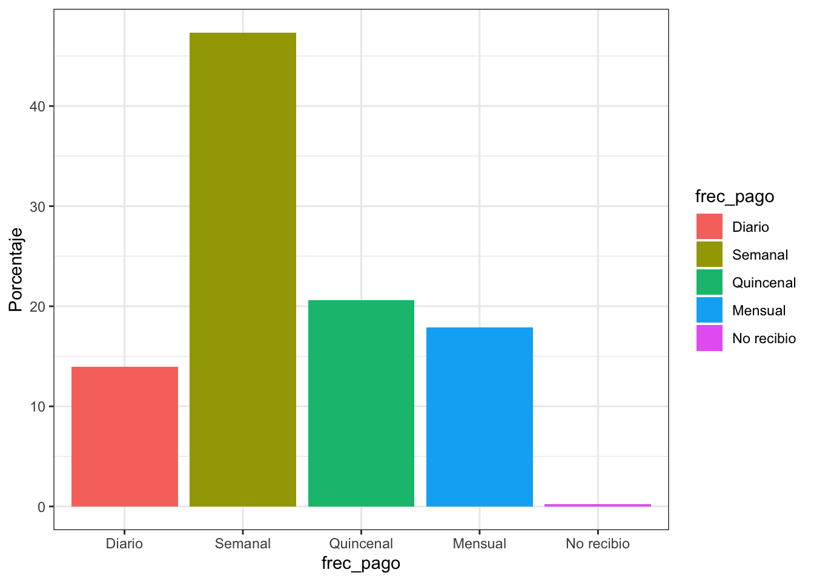
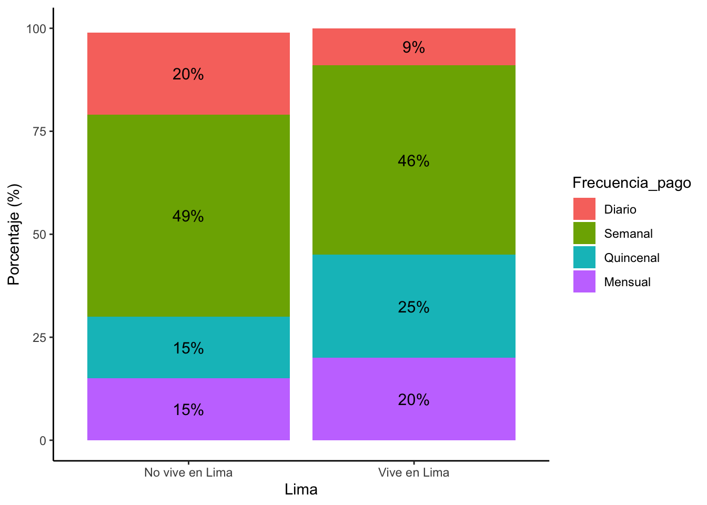
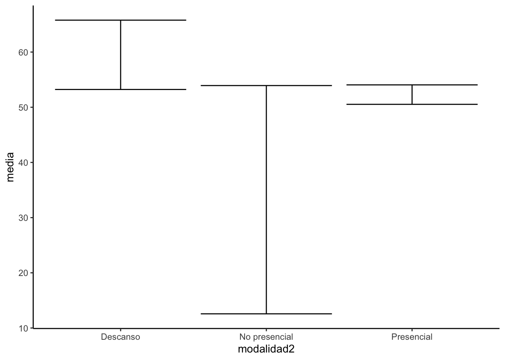

library(rio)
library(dplyr)
library(ggplot2)data = import("PD5_enpove2022.sav")names(data)## [1] "departamento" "estrato" "sexo" "trabajo"
## [5] "ocupacion" "horas_trabajo" "modalidad" "frec_pago"
## [9] "ingreso" "busq_trabajo" "tiempo_busc" "remesas"
## [13] "Lima" "modalidad2"¿Existe una relación significativa entre el estrato con el envío de remesas?
1:Bajo / 2:Medio bajo / 3:Medio / 4:Medio alto / 5:Alto
Preparar nuestras variables
data = data %>%
mutate(remesas = factor(remesas, labels = c("Si","No"))) %>%
mutate(estrato= factor(estrato, labels = c("Bajo","Medio bajo","Medio","Medio alto","Alto")))table(data$remesas)##
## Si No
## 4443 3867table(data$estrato)##
## Bajo Medio bajo Medio Medio alto Alto
## 1339 3527 4122 2291 342tabla1 = table(data$estrato,data$remesas)tablapor = tabla1 %>%
prop.table(1) %>%
round(2)
tablapor##
## Si No
## Bajo 0.57 0.43
## Medio bajo 0.54 0.46
## Medio 0.53 0.47
## Medio alto 0.54 0.46
## Alto 0.38 0.62tablapor = as.data.frame(tablapor)names(tablapor) = c("Estrato","Remesa","Porcentaje")
names(tablapor)## [1] "Estrato" "Remesa" "Porcentaje"ggplot(tablapor, aes(x= Estrato, y=Porcentaje*100, fill=Remesa)) +
geom_bar(position = "stack", stat = "identity")+
ylab("Porcentaje (%)")+
geom_text(aes(label=paste0(Porcentaje*100,"%")),
position = position_stack(vjust = 0.5),
size = 4)+
theme_classic()
chisq.test(tabla1)$expected##
## Si No
## Bajo 522.3599 454.6401
## Medio bajo 1371.3953 1193.6047
## Medio 1580.9809 1376.0191
## Medio alto 847.4314 737.5686
## Alto 120.8325 105.1675todos las celdas tienen por lo menos 5 observaciones
chisq.test(tabla1) #Tabla de contingencia con frecuencias en absoluto##
## Pearson's Chi-squared test
##
## data: tabla1
## X-squared = 27.771, df = 4, p-value = 1.388e-05H0 : No existe asociación/dependencia entre pertenecer a cierto estrato y enviar remesas a Venezuela.
A un 95% de confianza, como la prueba indica que el pvalor no supera el 0.05, tenemos evidencia suficiente para rechazar la hipótesis nula y concluir que en la población si existe asociación entre pertenecer a cierto estrato y enviar remesas.
IC para proporción
variable trabajo
data %>%
count(trabajo)## trabajo n
## 1 1 5987
## 2 2 4240
## 3 NA 1394data %>%
filter(!(is.na(trabajo))) %>%
count(trabajo)## trabajo n
## 1 1 5987
## 2 2 42401/Si trabaja: 5987
2/No trabaja: 4240
prop.test(5987, 5987+4240)##
## 1-sample proportions test with continuity correction
##
## data: 5987 out of 5987 + 4240, null probability 0.5
## X-squared = 298.09, df = 1, p-value < 2.2e-16
## alternative hypothesis: true p is not equal to 0.5
## 95 percent confidence interval:
## 0.5757838 0.5949741
## sample estimates:
## p
## 0.5854112IC para la media
Prueba T : Hallar si hay diferencia de las medias/promedios entre DOS grupos
table(data$remesas)##
## Si No
## 4443 3867library(lsr)
grafico_t = data %>%
filter(!(is.na(remesas))) %>%
group_by(remesas) %>%
summarise(media = mean(ingreso, na.rm=T),
inf = ciMean(ingreso, na.rm=T)[1],
sup = ciMean(ingreso, na.rm=T)[2])t.test(ingreso ~ remesas, data)##
## Welch Two Sample t-test
##
## data: ingreso by remesas
## t = 4.3886, df = 3677.7, p-value = 1.173e-05
## alternative hypothesis: true difference in means between group Si and group No is not equal to 0
## 95 percent confidence interval:
## 46.16303 120.71568
## sample estimates:
## mean in group Si mean in group No
## 542.5315 459.0921H0: No hay diferencia entre las medias de ingresos de los que envian remesas de los que
A un 95% de nivel de confianza existe evidencia suficiente para rechazar la hipótesis nula y afirmar que existe diferencias en el promedio de ingreso según si envia remesas a venezuela o no.
ggplot(grafico_t, aes(x=remesas,y=media))+
geom_errorbar(aes(ymin = inf, ymax = sup))+
theme_classic()
Describe a la variable frecuencia de pago, realiza el gráfico respectivo e interpreta los resultados.
names(data)## [1] "departamento" "estrato" "sexo" "trabajo"
## [5] "ocupacion" "horas_trabajo" "modalidad" "frec_pago"
## [9] "ingreso" "busq_trabajo" "tiempo_busc" "remesas"
## [13] "Lima" "modalidad2"1:Diario/2:Semanal/3:Quincenal/4:Mensual/5:No recibió pago alguno
data = data %>%
mutate(frec_pago=factor(frec_pago, labels=c("Diario","Semanal","Quincenal","Mensual","No recibio")))tabla2 = data %>%
filter(!is.na(frec_pago)) %>%
count(frec_pago) %>%
mutate(Porcentaje = (n/sum(n))*100)
tabla2## frec_pago n Porcentaje
## 1 Diario 588 13.9601140
## 2 Semanal 1994 47.3409307
## 3 Quincenal 868 20.6077873
## 4 Mensual 753 17.8774929
## 5 No recibio 9 0.2136752ggplot(tabla2, aes(x=frec_pago, y=Porcentaje, fill=frec_pago))+
geom_bar(stat="identity")+
theme_bw()
Ahora analiza si que una persona vive en Lima (Lima) se relaciona con la frecuencia de pago (frecuencia).
Lima: es categórica dicotómica
Frec_pago: categórica
tabla3 = table(data$Lima,data$frec_pago)
tabla3##
## Diario Semanal Quincenal Mensual No recibio
## No vive en Lima 376 911 279 283 5
## Vive en Lima 212 1083 589 470 4tablapor2 = tabla3 %>%
prop.table(1) %>%
round(2)
tablapor2##
## Diario Semanal Quincenal Mensual No recibio
## No vive en Lima 0.20 0.49 0.15 0.15 0.00
## Vive en Lima 0.09 0.46 0.25 0.20 0.00chisq.test(tabla3)$expected## Warning in chisq.test(tabla3): Chi-squared approximation may be incorrect##
## Diario Semanal Quincenal Mensual No recibio
## No vive en Lima 258.8205 877.7009 382.0684 331.4487 3.961538
## Vive en Lima 329.1795 1116.2991 485.9316 421.5513 5.038462#Importar data otra vez
data = import("PD5_enpove2022.sav")
data_sinNoRecibio = data %>%
filter(!is.na(frec_pago)) %>%
filter(!(frec_pago==5)) %>%
mutate(frec_pago=factor(frec_pago, labels=c("Diario","Semanal","Quincenal","Mensual")))
tabla4 = table(data_sinNoRecibio$Lima,data_sinNoRecibio$frec_pago)
tabla4##
## Diario Semanal Quincenal Mensual
## No vive en Lima 376 911 279 283
## Vive en Lima 212 1083 589 470tablapor3 = tabla4 %>%
prop.table(1) %>%
round(2)
tablapor3##
## Diario Semanal Quincenal Mensual
## No vive en Lima 0.20 0.49 0.15 0.15
## Vive en Lima 0.09 0.46 0.25 0.20chisq.test(tabla4)$expected##
## Diario Semanal Quincenal Mensual
## No vive en Lima 258.6752 877.2082 381.8539 331.2627
## Vive en Lima 329.3248 1116.7918 486.1461 421.7373chisq.test(tabla4)##
## Pearson's Chi-squared test
##
## data: tabla4
## X-squared = 159.36, df = 3, p-value < 2.2e-16tablapor3 = as.data.frame(tablapor3)
names(tablapor3)= c("Lima","Frecuencia_pago","Porcentaje")
ggplot(tablapor3, aes(x= Lima, y=Porcentaje*100, fill=Frecuencia_pago)) +
geom_bar(position = "stack", stat = "identity")+
ylab("Porcentaje (%)")+
geom_text(aes(label=paste0(Porcentaje*100,"%")),
position = position_stack(vjust = 0.5),
size = 4)+
theme_classic()
Analiza si existe diferencias entre el promedio de horas de trabajo a la semana (horas_trabajo) según modalidad de trabajo (modalidad2) - IC de la media por grupos.
grafico_5 = data %>%
filter(modalidad2 %in% c("Descanso","No presencial","Presencial")) %>%
group_by(modalidad2) %>%
summarise(media = mean(horas_trabajo, na.rm=T),
inf = ciMean(horas_trabajo, na.rm=T)[1],
sup = ciMean(horas_trabajo, na.rm=T)[2])ggplot(grafico_5, aes(x=modalidad2,y=media))+
geom_errorbar(aes(ymin = inf, ymax = sup))+
theme_classic()